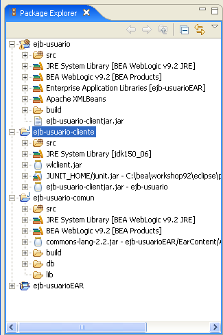
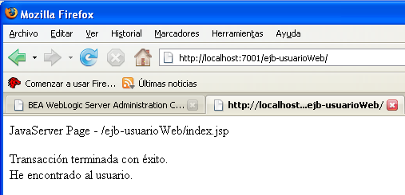
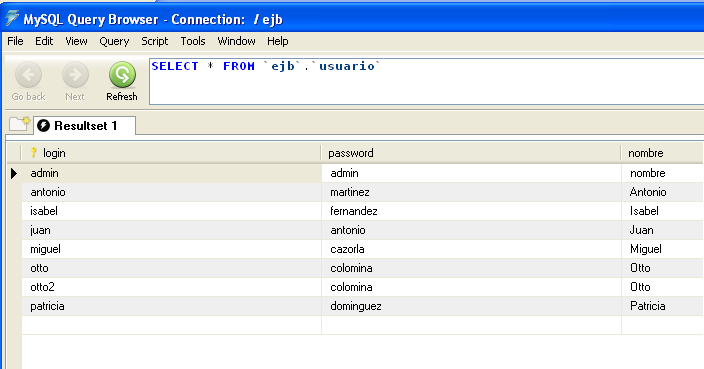
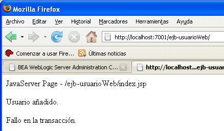

Sesión 5 de ejercicios EJB - Transacciones EJB
Pasos previos
Para probar la gestión de transacciones en EJB vamos a continuar usuando el entorno de programación BEA Workshop y el dominio Weblogic "ejb" con el que estamos trabajando. Utilizaremos también la aplicación EAR "ejb-usuarioEAR" desarrollada en el ejercicio anterior. Si no te dio tiempo a terminar el ejercicio, puedes descargarte su solución de la página Web.
La aplicación EAR contiene:
- El proyecto "ejb-usuario-comun" con el DAO UsuarioDAO que implementa las operaciones:
- void addUsuario(UsuarioTO)
- int delUsuario(String)
- List<UsuarioTO> getAllUsuarios()
- UsuarioTO selectUsuario(String)
- UsuarioTO selectUsuario(String,String)
- int updateUsuario(UsuarioTO)
- El proyecto EJB "ejb-usuario" con el EJB UsuarioBean que proporciona el acceso remoto al DAO.
Además, en el ejercicio anterior se implementó el proyecto "ejb-usuario-cliente" que contiene un cliente ejemplo que accede de forma remota al bean.
Vamos a comenzar mejorando dos pequeñas cuestiones del ejercicio anterior.
En primer lugar, en el proyecto EJB no es correcto definir como static el objeto UsuarioDAO, ya que esto crearía un único DAO compartido por todos los posibles clientes del EJB, creando un cuello de botella en el diseño.
Comencemos, pues, por eliminar la declaración static de los objetos factoriaDAOs y usuarioDAO del EJB UsuarioBean. Su definición quedaría como sigue:
@Session(ejbName = "UsuarioBean")
@JndiName(remote = "UsuarioBean")
@FileGeneration(remoteClass = Constants.Bool.TRUE,
remoteHome = Constants.Bool.TRUE,
localClass = Constants.Bool.FALSE,
localHome = Constants.Bool.FALSE,
remoteClassName = "Usuario",
remoteHomeName = "UsuarioHome")
public class UsuarioBean extends GenericSessionBean
implements SessionBean {
private static final long serialVersionUID = 1L;
private FactoriaDAOs factoriaDAOs;
private IUsuarioDAO usuarioDAO;
public void ejbCreate() {
factoriaDAOs = FactoriaDAOs.getInstance();
usuarioDAO = factoriaDAOs.getUsuarioDAO();
}
...
En segundo lugar, vamos a modificar el build path del proyecto cliente para evitar tener que copiar el JAR cliente "ejb-usuario-clientjar.jar" cada vez que modificamos el proyecto EJB.
Para ello basta con borrar el fichero "ejb-usuario-clientjar.jar" del proyecto cliente y añadir al build path el fichero mismo fichero JAR del proyecto EJB:
1. Borrar la librería ejb-usuario-clientjar.jar del proyecto ejb-usuario-cliente.
2. Configurar el build path del proyecto y seleccionar en la pestaña "Libraries" la opción "Add JARs...". Seleccionar el fichero "ejb-usuario-clientjar.jar" del proyecto "ejb-usuario".
De esta forma se enlaza directamente con el proyecto cliente el JAR cliente que reside en el proyecto EJB. Recordemos que cada vez que modificamos el proyecto EJB y lo redesplegamos en el servidor se vuelve a generar el fichero JAR cliente.
La configuración inicial del proyecto queda como muestra la siguiente pantalla:

Pon en marcha el servidor de aplicaciones y despliega el EAR. Inicializa la base de datos con las tareas ant del fichero "build.xml" del proyecto común ("Botón derecho > Run As > Ant Build..." y selecciona los dos targets en el orden "initBD", "dataBD"). Comprueba que todo funciona correctamente ejecutando las pruebas JUnit del proyecto cliente.
Gestión de transacciones con JTA
En esta primera parte del ejercicio vamos a probar la gestión de transacciones utilizando JTA (Java Transaction API). Recordemos que con JTA es posible demarcar las transacciones fuera del DAO y realizar las llamadas a sus métodos en el contexto transaccional definido.
Vamos a realizar la gestión de la transacción en una página JSP que accede al DAO.
1. Crea un nuevo proyecto Web en el EAR con el nombre "ejb-usuarioWeb".
2. Añade la dependencia entre el proyecto Web y el proyecto común (seleccionar "Botón derecho > Properties > J2EE Module Dependencies" y añadir "ejb-usuario-comun.jar").
3. Crea el siguiente fichero JSP "index.jsp" en el directorio "WebContent"
<%@ page language="java" contentType="text/html;charset=UTF-8"%>
<html>
<body>
JavaServer Page - ${pageContext.request.requestURI}
<%
javax.naming.Context jndiContext = new javax.naming.InitialContext();
javax.transaction.UserTransaction tx = (javax.transaction.UserTransaction)
jndiContext.lookup("javax.transaction.UserTransaction");
es.ua.jtech.proyint.dao.FactoriaDAOs factoria =
es.ua.jtech.proyint.dao.FactoriaDAOs.getInstance();
es.ua.jtech.proyint.dao.usuario.IUsuarioDAO usuario = factoria.getUsuarioDAO();
try {
tx.begin();
// Llamadas al UsuarioDAO
tx.commit();
%>
<p>Transacción terminada con éxito.</p>
<% } catch (es.ua.jtech.proyint.dao.DAOException e) {
tx.rollback(); %>
<p>Fallo en la transacción</p>
<% }%>
</body>
</html>
En el código abrimos una transacción con la llamada tx.begin(). Dentro del alcance de la transacción hacemos las llamadas al DAO y, si no se ha producido ninguna excepción, se ejecuta el tx.commit(). Si se produce alguna excepción, se captura y se ejecuta la sentencia tx.rollback(), con lo que la BD vuelve al estado previo al comienzo de la transacción.
Para probar el ejemplo, tenemos que añadir algunas llamadas a métodos del usuarioDAO, desplegar el EAR, acceder a la página "http://localhost:7001/ejb-usuarioWeb/" y comprobar con el administrador de la BD sobre la tabla "usuario" que la gestión de la transacción está funcionando correctamente.
Podemos comenzar probando que todo funciona correctamente haciendo una búsqueda:
<%
...
try {
tx.begin();
es.ua.jtech.proyint.to.UsuarioTO usuarioTO = usuario.selectUsuario("otto");
tx.commit();
%>
<p>Transacción terminada con éxito.<br/>
He encontrado al usuario.</p>
<% } catch (es.ua.jtech.proyint.dao.DAOException e) {
tx.rollback(); %>
<p>Fallo en la transacción.</p>
<% }%>
Comprueba que la aplicación funciona correctamente:

Vamos ahora a provocar una excepción. Una posible forma es añadiendo un usuario con un login que ya existe. Por ejemplo, el siguiente código provoca un fallo en la transacción, ya que añadimos un usuario que ya existe:
...
try {
tx.begin();
es.ua.jtech.proyint.to.UsuarioTO usuarioTO = usuario.selectUsuario("otto");
usuario.addUsuario(usuarioTO);
tx.commit();
...
Despliégalo y prueba a conectarte a la aplicación, verás el mensaje provocado por el fallo en la transacción.
Cambia ahora el login y vuelva a probar la aplicación. Verás que ahora sí se termina la transacción.
...
try {
tx.begin();
es.ua.jtech.proyint.to.UsuarioTO usuarioTO = usuario.selectUsuario("otto");
usuarioTO.setlogin("otto2");
usuario.addUsuario(usuarioTO);
tx.commit();
...
Comprueba con el administrador de BD que la tabla se ha modificado:

Vamos a probar, por último, que realmente se realiza el rollback cuando se produce una excepción. Antes de producir el error añade un usuario correcto en la base de datos. Comprueba que, aunque se ha producido el error después de añadir el usuario, la tabla de usuarios no se ha actualizado:
...
try {
tx.begin();
es.ua.jtech.proyint.to.UsuarioTO usuarioTO = usuario.selectUsuario("otto");
usuarioTO.setlogin("otto3");
usuario.addUsuario(usuarioTO);%>
<p>Usuario añadido.</p>
<% usuario.addUsuario(usuarioTO);
tx.commit();
...
Si nos conectamos a la página, veremos el siguiente mensaje:

Y si consultamos la tabla, podremos comprobar que el usuario "otto3" no se ha añadido.
Gestión de transacciones declarativas en EJB
Vamos por último a comprobar la gestión de transacciones en los EJB. Vamos a realizar las siguientes pruebas:
- Crear un método en el EJB que realice una secuencia de llamadas a métodos del DAO y comprobar la gestión de la transacción en función del atributo declarado en el método.
- Crear la transacción en el cliente remoto, llamar a los métodos elementales del EJB y comprobar la gestión de la transacción en función de los atributos.
Gestión de la transacción en un único método del EJB
Creamos el siguiente método en el EJB "UsuarioBean":
@RemoteMethod(transactionAttribute =
Constants.TransactionAttribute.REQUIRED)
public void pruebaTransaccion(String login, Boolean excepcion) {
try {
UsuarioTO usuarioTO = new UsuarioTO();
usuarioTO.setLogin(login);
usuarioDAO.addUsuario(usuarioTO);
if (excepcion) usuarioDAO.addUsuario(usuarioTO);
} catch (DAOException e) {
e.printStackTrace();
throw new EJBException();
}
}
Lo probamos con el siguiente programa en el paquete es.ua.jtech.ejb.clientes del proyecto cliente:
...
public class ClienteTransaccion {
public static void main(String[] args) {
try {
Context jndiContext = getInitialContext();
Object obj = jndiContext.lookup("UsuarioBean");
UsuarioHome home =
(UsuarioHome) narrow(obj, UsuarioHome.class);
obj = home.create();
Usuario usuario = (Usuario) narrow(obj, Usuario.class);
System.out.print("Introduce el login de un nuevo " +
"usuario (no debe existir en la BD): ");
BufferedReader in = new
BufferedReader(new InputStreamReader(System.in));
String login = in.readLine();
System.out.print("Quieres provocar una excepción (si/no)?: ");
in = new BufferedReader(new InputStreamReader(System.in));
String respuesta = in.readLine();
Boolean excepcion = false;
if (respuesta.equals("si")) excepcion = true;
usuario.pruebaTransaccion(login, excepcion);
System.out.println("Método llamado con éxito");
} catch (Exception e) {
System.out.println("Excepción \n Mensaje: "
+ e.getMessage());
}
}
...
Lanza el administrador de BD, consulta los usuarios de la BD y ejecuta la aplicación. Podrás comprobar que funciona correctamente la gestión de la transacción.
Prueba a quitar el atributo de transacción del método en el EJB (o a declararlo con un atributo de "NEVER"). Podrás comprobar que en este caso no se recupera la transacción y se añade el nuevo usuario en la tabla.
Propagación de la transacción del cliente al EJB
Vamos a terminar probando el atributo transaccional "REQUIRES_NEW". Recordemos que con este atributo un método crea un nuevo contexto transaccional dentro del contexto del llamador. Si el método termina con éxito, la transacción se confirma, independientemente de si la transacción del llamador termina o no con éxito.
Para probarlo, abrimos una transacción en el cliente que llama al EJB, llamamos al método del EJB y hacemos en el cliente que la transacción se aborte.
Si el atributo transaccional del método llamado es "REQUIRED", el rollback de la transacción en el cliente afectará también al método del EJB, aunque éste haya terminado. Sin embargo, si el atributo es "REQUIRES_NEW" el rollback en el cliente no afectará al EJB, porque éste habrá realizado su método en una nueva transacción terminada con éxito. Por último, si el atributo del método llamado es "REQUIRES_NEW" y la transacción del EJB falla, este fallo también afecta a la transacción del llamador. En concreto, vamos a usar el método addUsuario(UsuarioTO) y un programa cliente nuevo.
1. Empecemos por añadir en el EJB un método addUsuario(String con un atributo transaccional de "REQUIRED" y hagamos que lance una excepción si falla (cuando se añade un usuario que ya existe):
@RemoteMethod(transactionAttribute = Constants.TransactionAttribute.REQUIRED)
public void addUsuario(String login) {
try {
UsuarioTO usuarioTO = new UsuarioTO();
usuarioTO.setLogin(login);
usuarioDAO.addUsuario(usuarioTO);
} catch (DAOException e) {
e.printStackTrace();
throw new EJBException();
}
}
2. Escribimos ahora un nuevo cliente remoto, basado en el cliente anterior:
...
public class ClienteTransaccion2 {
public static void main(String[] args) {
UserTransaction tx = null;
try {
Context jndiContext = getInitialContext();
Object obj = jndiContext.lookup("UsuarioBean");
UsuarioHome home = (UsuarioHome)
narrow(obj, UsuarioHome.class);
obj = home.create();
Usuario usuario = (Usuario) narrow(obj, Usuario.class);
System.out.println(
"Probando las transacciones abiertas en el cliente...");
System.out.print(
"Introduce el login de un nuevo usuario " +
"(no debe existir en la BD): ");
BufferedReader in =
new BufferedReader(new InputStreamReader(System.in));
String login = in.readLine();
System.out.print(
"Quieres provocar una excepción (si/no)?: ");
in = new BufferedReader(new InputStreamReader(System.in));
String respuesta = in.readLine();
Boolean excepcion = false;
if (respuesta.equals("si")) excepcion = true;
tx = (javax.transaction.UserTransaction)
jndiContext.lookup("javax.transaction.UserTransaction");
tx.begin();
usuario.addUsuario(login);
if (excepcion)
usuario.addUsuario(login);
tx.commit();
System.out.println("Método llamado con éxito");
} catch (Exception e) {
System.out.println("Excepción \n Mensaje: "
+ e.getMessage());
try {
tx.rollback();
} catch (Exception e1) {
e1.printStackTrace();
}
}
}
...
Podemos ver que primero se hace una llamada a addUsuario y después (cuando ésta ya ha terminado) se provoca una excepción volviendo a llamar la método, ahora con un usuario ya existente. Estas dos llamadas se hacen dentro de una transacción creada en el cliente con un objeto UserTransaction proporcionado por el servidor de aplicaciones.
3. Añadimos un usuario nuevo y forzamos una excepción. Comprobamos que el usuario no se ha añadido en la BD porque el atributo transaccional del método es "REQUIRED" y se hereda la transacción del llamador.
4. Cambiamos el atributo transaccional del método del EJB a "REQUIRES_NEW". Volvemos a añadir un usuario nuevo y a forzar la excepción. Comprobamos que el usuario se ha añadido en la tabla.